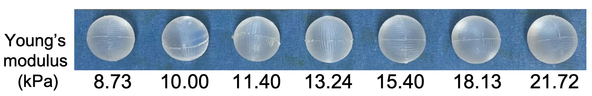
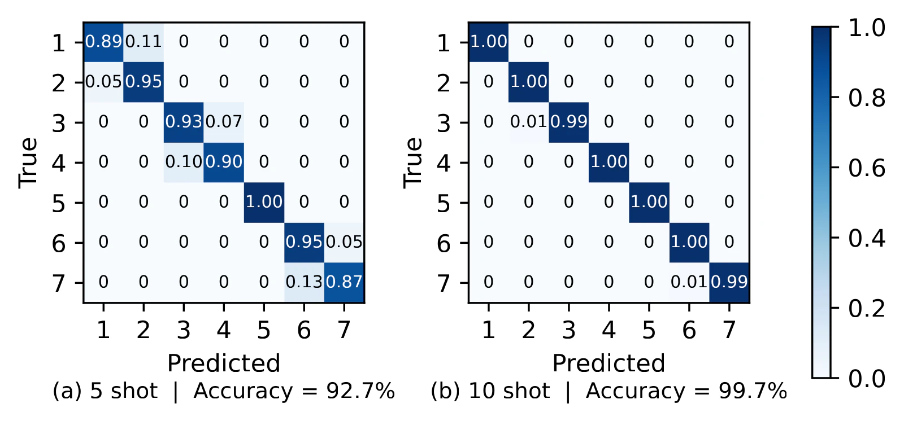
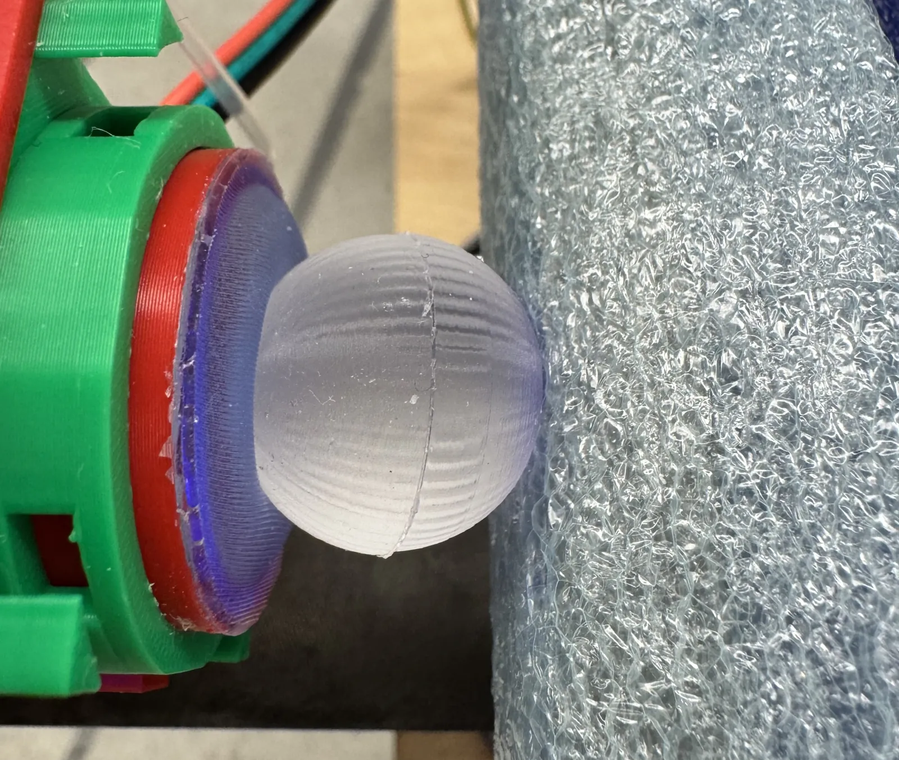

Study 1 · ultra-soft materials
Seven stiffness classes, two-state active probing.
Seven spheres span 8.73–21.72 kPa Young’s modulus. The pretrained general-force backbone supplies 2048-dimensional features; LDA reaches 92.7% at 5-shot and 99.7% at 10-shot over 60 sessions.


